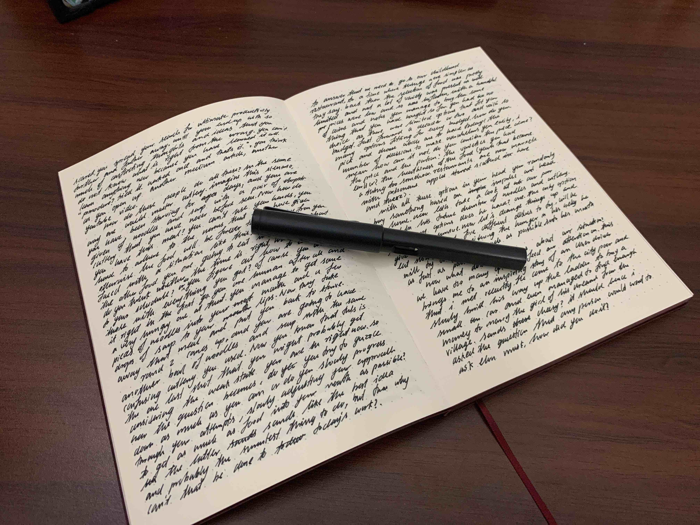

Welcome
Hi there, I’m Janith Wanniarachchi, A Econometrics and Business Statistics PhD candidate at Monash University, Australia, an R Shiny Developer at Appsilon and a BSc. in Statistics (Hons.) graduate from the University of Sri Jayewardenepura, Sri Lanka.
There’s more to who I am, what I have done, how I ended up here. An updated history of my work and achievements can be found in my Curriculum Vitae here
My research interests are mainly in data visualization, explainable AI and climate sciences. In this website you will find some of my work and interests in statistics and creative writing. If you find anything out of place or worth mentioning to me, please contact me through my socials. If you want to learn more about my academic and professional background, check out my Resume.
With that being said, here are some of my interests that I don’t get to talk about a lot.
Games
Sports
These are some of my favorite sports that I have played by now
Muay thai
I started out Muay Thai in the beginning of 2023 and after moving to Australia, I have kept on learning and practicing until now. I’m not a professional fighter and I highly doubt I would be in the future. But I do enjoy sparring during the group sessions as it teaches me a lot on pain tolerance, managing my emotions and being mindful in the present moment. So far the most painful memories of Muay Thai was a continued series of kicks to the IT band on the thigh that had to be massaged out with a pole.
Badminton
I had been playing badminton for so long I honestly don’t have any memory of when it started. However, I am in no ways a national level player by now but it is the only sport where I feel naturally at home.
Padle Tennis
This was a novelty that I got to enjoy during my time in Australia and it is quite an interesting sport. Padle Tennis is like a mix of table tennis and tennis mixed with a few aspects of squash. It’s a very fun and highly social game that I have picked up in 2024.
Volleyball
I did not have any idea on how to properly play when I started playing volleyball in middle school but now I’m now starting to pick up on how to play volleyball properly.
Archery
Another one of my random interests that blew up unexpectedly was archery. I had practiced shooting 30m targets using 36lb bow with sights for almost 6 months after which I played for the Sri Lankan Archery Nationals. After a while it became harder for me to consistently practice archery and I fell away from it as a sport.
Video games
Genshin Impact
Genshin Impact is a video game that I have been playing for almost an year now. The main things I love about the game are the stunning visuals, the art style and the music along with the gripping and creative story line. Since it’s mostly a single player game, I can play without any pressure of internet speed or skill level.
Apart from these I’m also a fan of the following video games,
- Honkai Star rail
- Dark souls 3
- Dishonored 2
- Overwatch
- Legend of Zelda : Breath of the Wild
- Celeste
- Assassins creed franchise upto Syndicate
- The entire Pokemon franchise
Fountain pens and Notebooks

My love for fountain pens began with my obsession with calligraphy and cursive writing. From the early days I have collected several starter level fountain pens, listed in chronoligcal order as follows.
- Hero Fountain Pen
- TWSBI Eco pen
- Parker Vector
- Jinhao X750
- Jinhao X550
Currently, I’m still using Noodler’s Bernanke Black as my primary ink and Daycraft dotted notebook as my paper medium. Here are some snaps of the various pens and notebooks that I have used upto now.